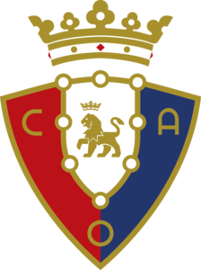
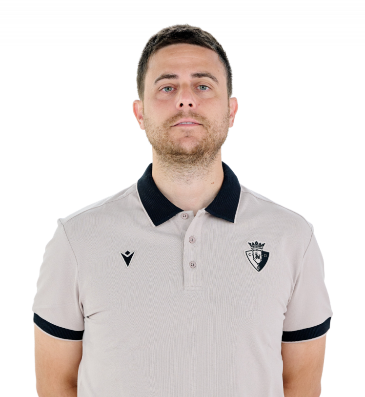
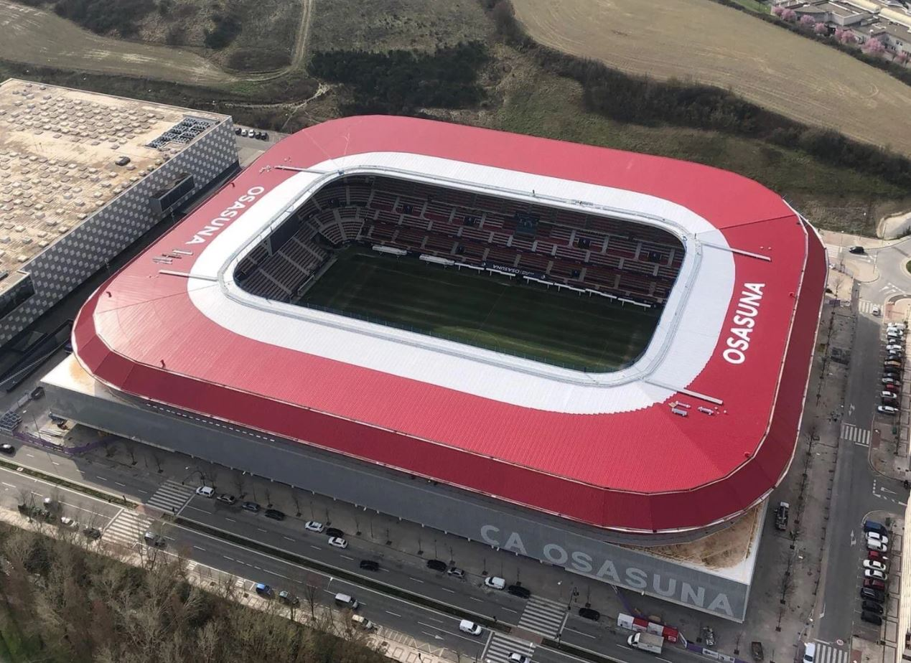

Treinador: Alessio Lisci
Alessio Lisci é um treinador italiano nascido em Roma, reconhecido pela sua metodicidade, juventude e capacidade de liderança. Destacou-se nas categorias de base e na equipa principal do Levante UD antes de assumir o comando do Mirandés para consolidar o seu percurso no futebol profissional espanhol.

Estádio: El Sadar
O Estadio El Sadar é um recinto desportivo espanhol localizado em Pamplona, conhecido pela sua atmosfera intimidante, vertical e apaixonante. Destacou-se pela sua profunda remodelação em 2021, que lhe valeu o prémio de "Estádio do Ano" a nível mundial.

Estilo de Jogo:
No CA Osasuna, o treinador italiano Alessio Lisci utiliza um estilo de jogo caracterizado pelo "caos controlado", combinando a agressividade histórica do clube com uma organização tática moderna.
"Osasuna nunca se rinde!"